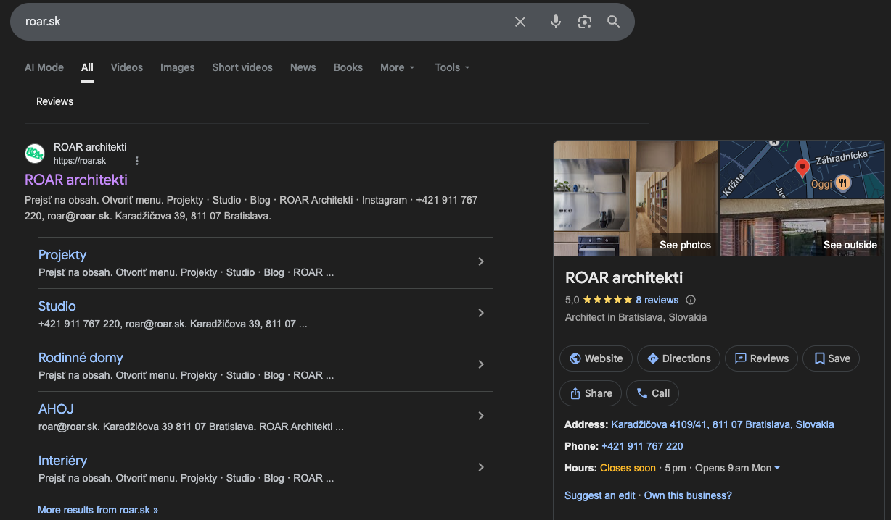
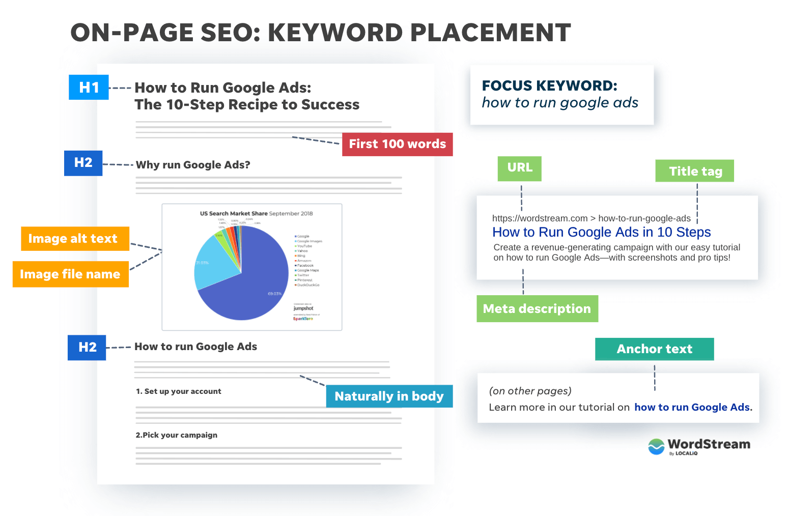
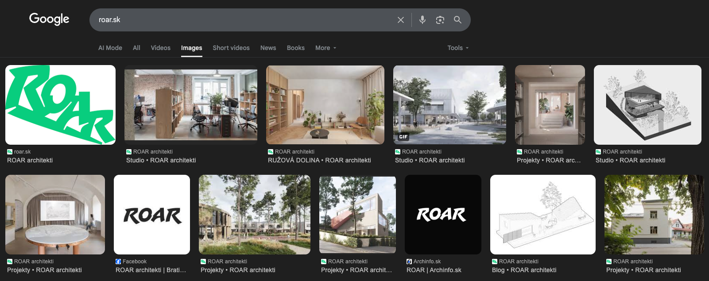

SEO Audit
ROAR Architekti – roar.sk
Intro
Web ROAR architekti má silnou vizuální stránku a kvalitní obsah na úrovni jednotlivých projektů, ale technický dluh a nevyužité příležitosti snižují performance ve vyhledavačích
1. Základní technické problémy
1.1 Stará 404 URL (zobrazovaná Googlem)
Zřejmá migrace URL struktury zanechala odkazy, které Google stále indexuje. Uživatelé, kteří kliknou na tyto výsledky vyhledávání, narazí na 404s:
| Legacy URL (404) | Pravděpodobná správná stránka |
|---|---|
/portfolio-item/rd-pal/ |
Neznámý |
/portfolio-item/dva-dvojdomy/ |
/projekty/rd-svaty-jur/ (ověřit) |
/portfolio-item/nieco-2/ |
Neznámý |
/portfolio-item/gbc-v/ |
/projekty/gbc/ |
/portfolio-item/bjorn/ |
Neznámý |
/portfolio-item/mdvd/ |
Neznámý |
/portfolio-item/radovky-stupava/ |
/projekty/radovky-stupava/ |
/portfolio-item/mb/ |
Neznámý |
/portfolio-category/architektura/ |
/projekty/ |
/kontakt/ |
/studio/ (kontaktní info je nyní zde) |
To snižuje hodnotu odkazů, zhoršuje UX a plýtvá čas crawlerů. Pro každého jsou tyto stránky slepá ulička.
Můžete to řešit následovně. Pokud je obsah již jinde na správných stránkách, přesměrovacím pluginem nastavte redirecty, a v Google Search Console zabraňte dalšímu indexování těchto stránek.
Na Wordpress existují redirection pluginy pro přesměrování nefunkčních URLs na současné ekvivalenty. Pro URLs bez
jasné shody směrujte na /projekty/, ať crawlery a uživatelé nekončí na 404 stránce – tyto situace
významně znehodnocují vaši pozici v očích vyhledavačů a lidem to také život neusnadňuje.
1.2 URLs neodpovídají obsahu
Tři projektové stránky zobrazují obsah, který neodpovídá jejich URL, pravděpodobně jako důsledek kopírování WordPress příspěvků bez aktualizace URLs:
| URL | Zobrazuje |
|---|---|
/projekty/orebro/ |
Projekt s názvem „trae" |
/projekty/int-suna-2/ |
DOM V ZÁHRADE |
/projekty/int-ruzova-dolina/ |
CENTRUM VEREJNÝCH SLUŽIEB VALALIKY |
Nesoulad URL a obsahu mate vyhledávače ohledně relevance a brání rankování na správná klíčová slova. Pro uživatele hledajícího „orebro architecture" by stránka vyskočila ale byla irelevantní.
Vytvořte nové stránky se správnými slugy (/projekty/trae/, /projekty/dom-v-zahrade/,
/projekty/centrum-valaliky/), 301 přesměrujte staré URL na nové, aktualizujte interní odkazy. Tyto
nastavení jde provést ve Wordpressu u daných stránek.
1.3 Podstatné ale nefunkční stránky
/kontakt/ vrací 404. Tato stránka byla odstraněna, ale zůstává indexovaná a pravděpodobně odkazovaná z externích zdrojů. Kdokoli hledající „ROAR architekti kontakt" dostane 404.
/zasady-pouzivania-suborov-cookie/ vrací chybu pluginu. Tato stránka cookie policy je odkazována z Complianz banneru na každé stránce webu. Každý návštěvník vidí odkaz na nefunkční stránku.
Pozn.: Pokud s cookies nějak nenakládáte (pokročilé funkce Google Analytics atd.), cookie banner vůbec nepotřebujete.
Řešení: Buď obnovte /kontakt/, nebo ji přesměrujte na /studio/, kde nyní
žijí kontaktní informace. Pro cookie policy opravte Complianz plugin, znovu vytvořte stránku přes jeho wizard,
nebo se ho zbavte, pokud cookies nepotřebujete. V Google Search Console požádejte o odstranění indexace nefunkčních
stránek.
1.4 Překlep v obsahu
Projektová stránka RUŽOVÁ DOLINA zobrazuje „ROK 2323" místo „2023". Detail.
2. SERP Metadata (Titles a descriptions)
Zobrazení v Chromu. Ukážeme si, jak texty upravit. Super business profil!
Meta titles
Všechny stránky mají title vyplněný: „Název projektu • ROAR architekti". Titulek homepage je pouze „ROAR architekti" bez popisného textu.
Titles jsou celkově minimální a generické – většina projektových stránek používá pouze název projektu plus značku, chybí kontext jako typ projektu (rodinný dom, verejná stavba, interiér) nebo lokace. Tím dost omezujete záběr klíčových slov, na která by se dalo rankovat.
Meta titles se nastavují pro jednotlivé stránky skrz váš SEO plugin.
Současné příklady a vylepšení:
| Stránka | Současný titulek | Lepší titulek |
|---|---|---|
| Homepage | ROAR architekti | ROAR architekti – architektonické štúdio Bratislava |
| SUNA | SUNA • ROAR architekti | SUNA – rodinný dom v Bratislave | ROAR architekti |
| GBC | GBC • ROAR architekti | GBC 5 – kancelárska budova Galvaniho | ROAR architekti |
Titulky jsou nejsilnější ranking a CTR signál. Generické titulky neodlišují projekty v SERPech a nepomáhají AI systémům vyvodit tematickou relevanci, což je v jejich očích činí méně relevantními pro zobrazování v uživatelských dotazech.
Meta descriptions
Na homepagi zcela chybí. Google se buď renderuje cookie popup text, nebo fragmenty jako menu, zápatí atd. Na obsahových stránkách nejsou manuálně vyplněné.
Toto snižuje ranking na klíčová slova, CTR, a web působí nedokončeně.
Možný meta description homepage:
ROAR architekti je architektonické štúdio v Bratislave. Navrhujeme rodinné domy, verejné stavby a interiéry s dôrazom na kontext a dlhodobú hodnotu.
Napište meta popisy pro všechny hlavní stránky. Zaměřte se na to, o čem stránka je, proč na tom záleží a pro koho je určena. 120–155 znaků. Nastavuje se také ve vašem SEO pluginu na daných stránkách.
3. Struktura obsahu a sémantika
Jak na strukturu obsahu
Použití H1
Každá stránka má H1. Projektové stránky používají název projektu, Studio používá „Studio" a tyto fungují dobře. Homepage je ale jen „ROAR Architekti" bez popisného kontextu. Neexistuje žádný text vysvětlující, co ROAR je nebo dělá.
H1 homepage by měl definovat entitu, ne jen opakovat branding. Např. „Architektonické štúdio ROAR architekti" nebo „ROAR architekti – architektúra a interiéry".
Hierarchie nadpisů (H2–H4)
Stránka Studio správně používá H2 nadpisy k oddělení sekcí (Ľudia, Súťaže, Publikácie). Projektové stránky čistě oddělují metadata a narativ. Žádné zjevné chyby v hierarchizaci.
Projektové stránky nicméně často spoléhají na seznamy a bloky metadat místo strukturovaných podnadpisů. Přidání H2 jako „Koncept", „Riešenie", „Kontext" (i když každá sekce má jen 2–3 věty) by zlepšilo čitelnost a pomohlo Googlu i LLMs pochopit sekce obsahu. Při vytváření nového na to myslete.
Homepage nedává HTML téměř žádný crawlovatelný text – pouze logo, navigaci, kontaktní info v patičce a cookie banner. Vizuální obsah (šest MP4 videí na pozadí) se není crawlovatelný textu, takže Google vidí vaší homepage jako slabou stránku a používá jakýkoli text, který najde (uvedeno výše).
Přidejte 1–2 krátké odstavce vysvětlující, kdo jste, co navrhujete a kde působíte. Toto je kritické pro pozice, AI shrnutí a lidské návštěvníky. Má to významný efekt a v kombinaci s vyplněnými meta popisky může významně pomoct zvýšit vyhledatelnost.
4. Indexovatelnost
Chybí sitemap
Na /sitemap.xml ani /sitemap_index.xml není sitemapa. Pokud existuje, není objevitelná na
standardních místech a není odkazována v robots.txt. Vytvořením a nahráním sitemapy do Search Console urychlíte a
usnadníte indexaci stránek Googlem, který ji využívá pro rychlé čtení webu.
Prázdné stránky kategorií
Stránky jako /category/verejne-stavby/ neobsahují žádný obsah – pouze hlavičku, patičku a cookie
banner. Protože web používá Search & Filter Pro pro kategorizaci projektů přes URL parametry, tyto WordPress
archívy kategorií neslouží žádnému účelu, ale jsou indexovány.
Stránky můžete v sitemapě nastavit jako noindex, přesměrovat je na /projekty/, nebo z nich
vytvořit pilířové stránky pro zachycení relevantního trafficu. Doporučuji poslední variantu.
Chybí alt texty obrázků
Obrázky se správně indexují – zvyšte jejich ranking

Obrázky používají správné <img> tagy s reálnými src URL. WordPress generuje správně
dimenzované náhledy. Nicméně alt atributy jsou všude prázdné. Pro vizální web se stovkami obrázků je to velká ztráta
rankování na image searchi na Googlu.
Doplňte alt texty k obrázkům na projektových stránkách, např. „Rodinný dom SUNA – pohľad z ulice" atp. Může dramaticky pomoct zvýšit viditelnost v image search.
5. Rychlost webu
Problém s načítáním na mobilu
Homepage se poměrně pomalu načítá na mobilních zařízeních kvůli videu, které je víceméně jediný obsah stránky. LCP na mobilu je přibližně 5,7 sekundy – dobré by bylo dostat se pod 2.5s. Na desktopu toto ale nebyl problém.
Slabé mobilní LCP přímo ovlivňuje mobilní pozice, efektivitu crawlování (pomalé stránky jsou crawlovány méně často) a to platí i pro AI.
6. Strukturovaná data
Žádná stránka neobsahuje strukturovaná data, která pomáhají jak vyhledávačům, tak AI systémům pochopit business entitu.
Organization/ArchitecturalFirm na homepage nebo stránce Studio – vyřešit s vývojářem:
{
"@context": "https://schema.org",
"@type": "ArchitecturalFirm",
"name": "ROAR architekti",
"url": "https://roar.sk",
"description": "Architektonické štúdio v Bratislave",
"address": {
"@type": "PostalAddress",
"streetAddress": "Karadžičova 39",
"addressLocality": "Bratislava",
"postalCode": "811 07",
"addressCountry": "SK"
},
"telephone": "+421911767220",
"email": "roar@roar.sk",
"founder": [
{"@type": "Person", "name": "Michal Romanec"},
{"@type": "Person", "name": "Patrik Kuva"}
],
"foundingDate": "2016",
"award": [
"1. miesto, Rekonštrukcia KC Hviezda (2022)",
"Nominácia CE.ZA.AR., GBC 5 (2022)"
]
}7. AI & LLM objevitelnost
Silné stránky
Linky z architektonických portálů (Archinfo, Archiweb, EARCH.cz, YIMBA) AI systémy indexují a tím linky pomáhají AI rankingu. Projektové stránky obsahují dobrý content pro LLM odpovědi. Business informace (adresa, telefon, IČO, DIČ) jsou uvedeny na stránce Studio, což pomáhá AI získat kontext. Vítězství v soutěžích a ocenění jsou silné trust signals.
Prostor ke zlepšení
Absence strukturovaných dat nutí AI parsovat nestrukturovaný text k pochopení webu – a může se splést. Homepage jasně neuvádí, co firma dělá. Žádný FAQ nebo Q&A obsah (LLMs preferují tento formát pro přímé odpovědi). Členové týmu jsou uvedeni bez explicitních rolí, tzn. AI nemůže určit, kdo založil nebo vede studio.
Přidejte FAQs na běžné klientské otázky: Aké typy projektov navrhujete? Ako prebieha spolupráca? V akých lokalitách pôsobíte? Koľko trvá návrh rodinného domu?... Formátujte jako jasné Q&A páry. Tento obsah je nejlepší způsob jak zachytit AI traffic, protože na uživatelské dotazy (které zachytíte) může dát přímo vaší odpověď.
Ujasněte obsah na stránce Studio. Ta uvádí čtyři jména pod „Ľudia" bez kontextu. AI pomůže další kontext, např.: „ROAR architekti založili v roku 2016 Michal Romanec a Patrik Kuva v Bratislave." Můžou pomoci i popisy rolí (Lead architect, Co-founder...). Pište v celých větách, které AI může extrahovat, ne jen seznamy.
Definujte studio na homepagi. I jediná věta: „ROAR architekti je progresívne architektonické štúdio v Bratislave, ktoré navrhuje projekty od interiérov po urbanizmus." může dost pomoci – podobná situace jak bylo řešeno výše. Text lze například vložit za video, ať se zachová stávající design, ale podchytí textové hodnoty pro vyhledavače.
8. Další zjištění
Social sharing obsah
Stránky nemají explicitní OG tagy. Když někdo sdílí projekt na sociálních sítích, náhled pravděpodobně zobrazuje logo
nebo žádný obrázek. Implementujte og:title, og:description, og:image pro všechny
stránky v SEO pluginu na daných stránkách – dost to pomáhá zvýšit lidské CTR a máte 100% kontrolu nad zobrazeným
obsahem na sociálních sítích.
Struktura URL blogu
Blogové příspěvky používají date-based URL strukturu (/2025/04/15/post-name/), což ředí keyword capture a
nepřináší moc relevantní informace pro Google a uživatele, a za nějaký čas budou stránky působit zastarale. Zvažte
/blog/post-name/ pro stránky – jde nastavit přímo we Wordpressu v sekci permalinks. Bude potřeba ale brát v
potaz již indexované stránky a případně poladit přesměrovávání.
Interní prolinkování
Navigace je konzistentní napříč stránkami. Projektové stránky obsahují prev/next odkazy. Webu by pomohl cross-linking mezi souvisejícími projekty podle kategorie. Jak již bylo zmíněno, každá stránka navíc odkazuje na nefunkční cookie policy, což uměle zvyšuje počet rozbitých linků na webu – to je pro vyhledavače obvykle signál, že web je zastaralý a nefunkční, opravou pluginu dokumentovanou výše to vyřešíte.
Action steps priority
- Opravte cookie policy plugin
- Opravte kontaktní stránku – přesměrování nebo skrýt v Search Console
- Přidejte meta popisky homepage a dalších stránek – v SEO pluginu, nahrát do Search Console. Pro HP např.: „ROAR architekti je architektonické štúdio v Bratislave. Navrhujeme rodinné domy, verejné stavby a interiéry."
- Implementujte 301 přesměrování pro stará URL nebo je skryjte v Google Search Console
- Přidejte alt text k obrázkům – klíčové pro image search, při nahrávání nových rovnou vyplňujte
-
Opravte nesoulad URLs a obsahu pro každou ze tří dotčených stránek
orebro,int-suna-2,int-ruzova-dolina– upravte stránku ve WordPressu, nascrollujte k poli URL/Permalink pod titulkem a změňte slug tak, aby odpovídal skutečnému názvu projektu - Přidejte FAQs – na existující stránky doplňte 3–5 běžných otázek a odpovědí. Pište v jasném Q&A formátu. Klíčové pro AI ranking
- Na homepage přidejte 1–2 odstavce skutečného textu (ne jen ve videu nebo obrázku) popisující ROAR a co děláte. Lze vložit za video – konzultujte s vývojářem
- Doplňte org schéma – SEO plugin bude mít sekci Knowledge Graph, kde můžete nastavit název organizace, logo a sociální profily
- Vyřešte stránky archivů kategorií – přidejte obsah, nebo je skryjte – v SEO pluginu budete mít možnost vypnout jejich indexaci, případně lze vyřešit v Search Console
- Vytvořte sitemapu SEO pluginem a nahrajte ji do Google Search Console. Doporučuji provést po provedení základních oprav, protože Google v tu chvíli web celý znovu zaindexuje
- Zlepšení mobilního LCP na homepagi konzultujte s vývojářem
Závěr
Web má spoustu potenciálu ke zlepšení technické hygieny, metadat a rankování. Branding je silný a obsah kvalitní.
Jakmile zanesete vytyčené opravy, web má potencál se stát sales channelem se stovkami návštěv týdně.
Při optimizaci
obsahu na konkrétní cílové skupiny zvýšíte ranking na relevantní dotazy, budete víc vidět v AI výsledcích, a Google web
bude chápat a zobrazovat častěji a přesně tak, jak si přejete – to vše bez nutnosti web dramaticky předělávat.